所城里访烟台剪纸，手造馆赏工匠作品
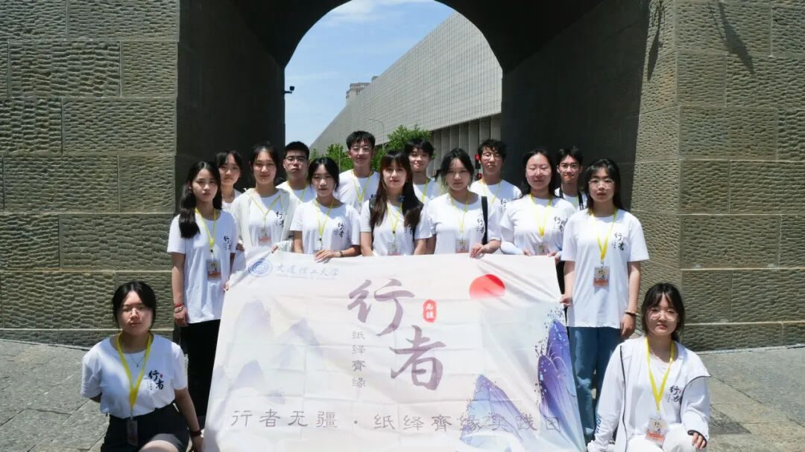
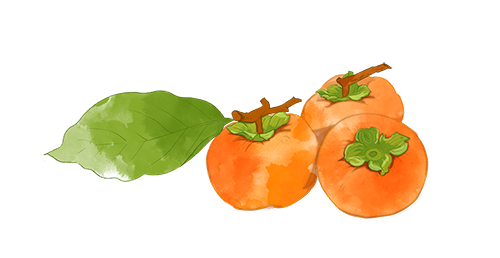
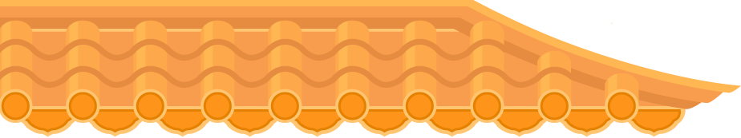
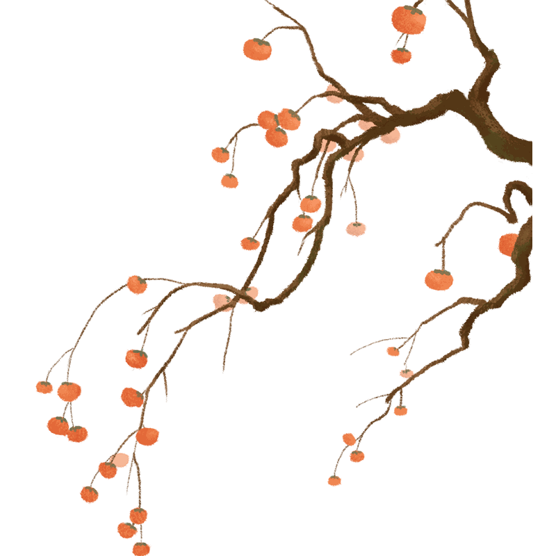
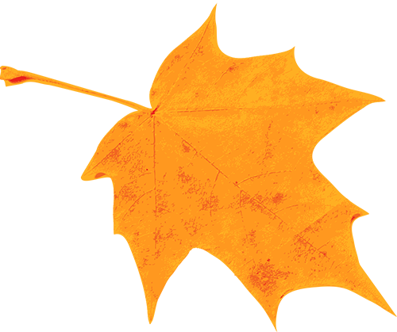
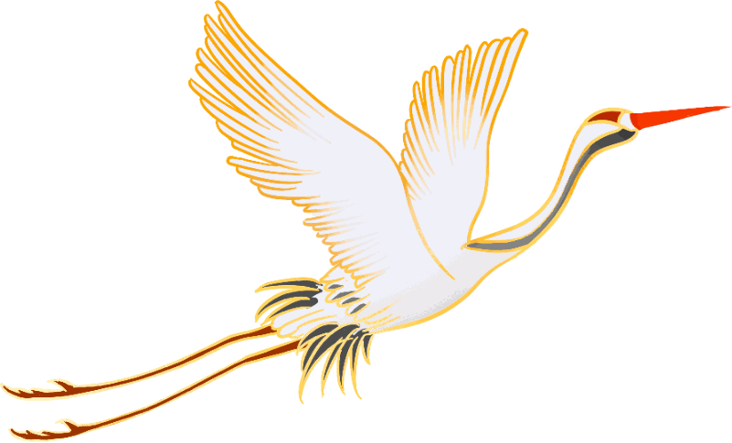
所
城
里
实践团的第一站来到了具有600年历史的“半部烟台史“——所城里，分组进行了商铺走访、街访及问卷发放。
在这里，我们遇到了一位对剪纸颇为感兴趣的天津游客，行者们了解到他的父辈是手工艺传承人，并曾从业于天津剪纸文化馆。在他的讲述下，脚下的青石板印记成为工匠们所走过的路，在不同的城市、不同的群体，却都有着精细雕刻、严谨刻画的老艺术家。原来，文化没有“地理”的限制，任何技艺都可以冲破时间的限制，经久不息的传承下来。
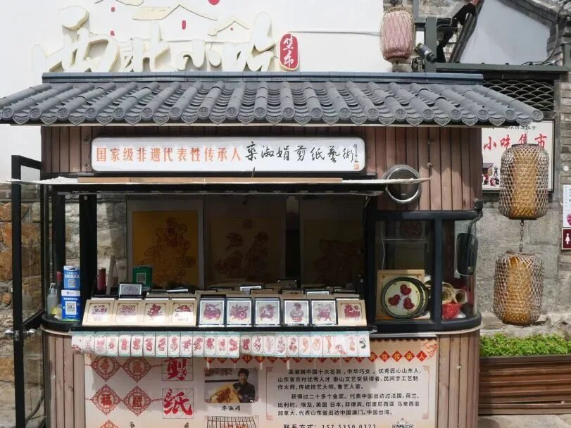
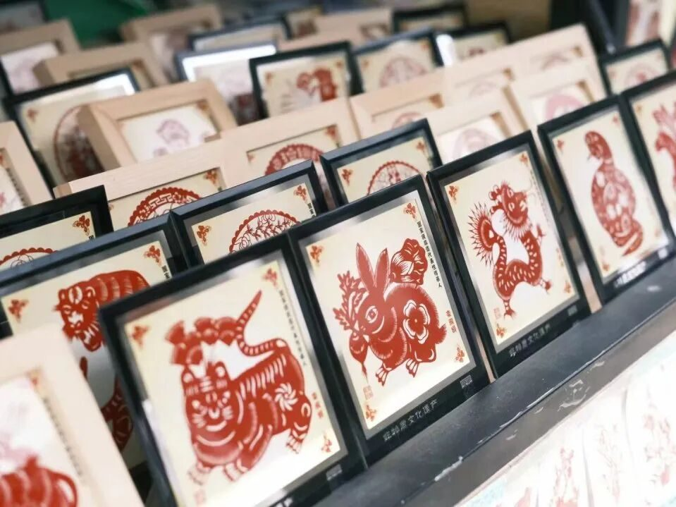
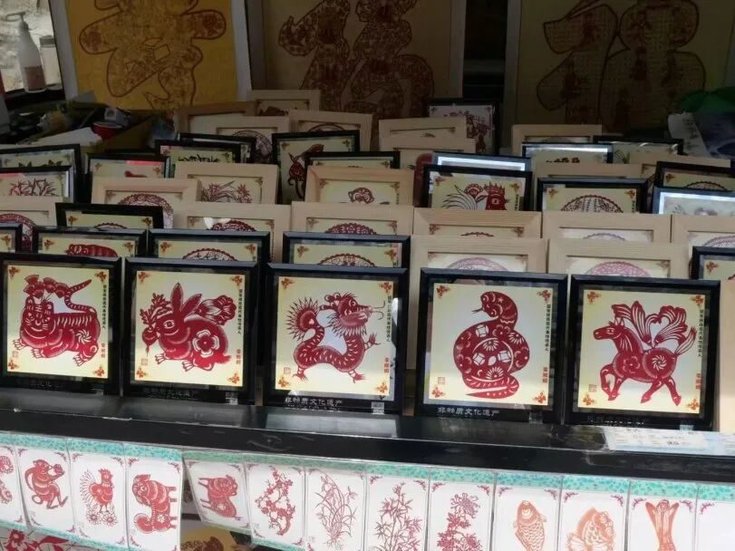
在街边的小店里，我们遇到了中国十大名剪之一的栾淑娟老师的儿子。聆听他饱含激情的讲述母亲剪纸时的姿态和神情，我们仿佛可以看见剪刀划过红纸片时的“流水线条”，也感受到了作为晚辈对传统技艺的赞叹和敬佩。当了解到他本人还是葫芦雕刻宋玉良老师的传承人之一时，我们不禁感慨：非遗长河如涓涓细流，文化以不同的形式传承和发扬，这也正是“一代人有一代人的担当”的道理。

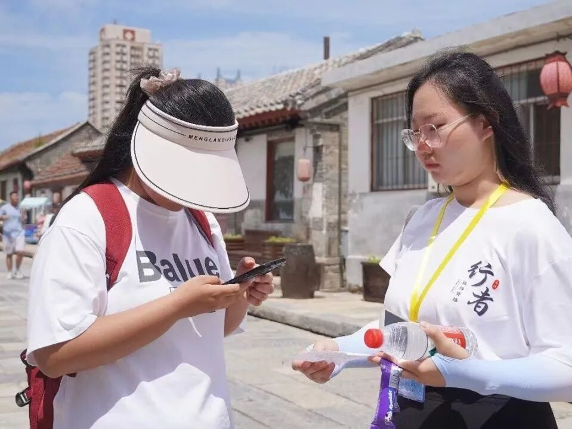
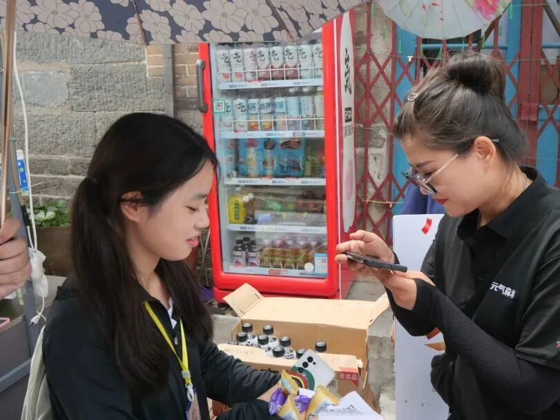
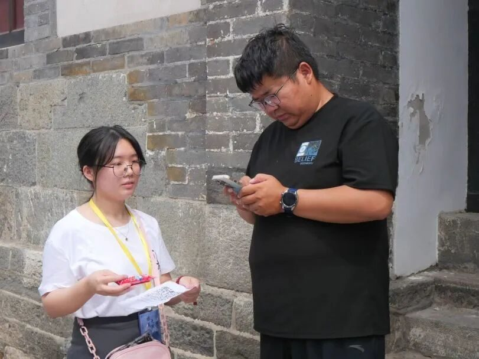
路上也会有一些有计划的人群，我们则选取发放问卷的形式来缩短时间，高质量的完成调研。本次采访从问卷上来看，主要群体为大学生等青年群体，同时也有部分中老年人，体现出了不同年龄段对烟台剪纸这类传统文化不同程度的认识和看法：不太了解的也渴望有机会能够深入的学习和研究，而略有耳闻的则是更加希望进一步的挖掘其中蕴藏的精神。这表明烟台剪纸的传承与发扬有着很大的潜力，可以进一步推广和传承。
手
造
展
馆
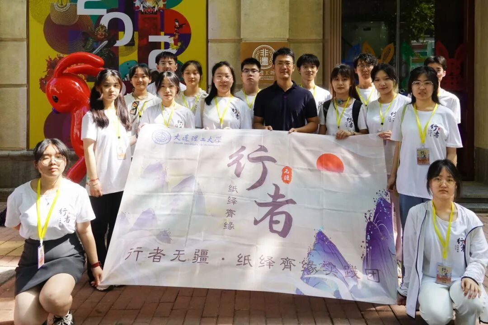
下午，我们来到了烟台手造展示体验馆。我们很荣幸的请到曲建鹏老师来为我们进行引路和讲解。
在曲建鹏老师的讲解和指导下，我们了解到烟台有魅力的文化绝不仅仅是烟台剪纸，有更多的泥塑、绒绣、盘扣等手工技艺都值得被关注、被欣赏、被传承下去。更多的胶东文化刻入脑海，更浓郁的文化情怀充斥心中。
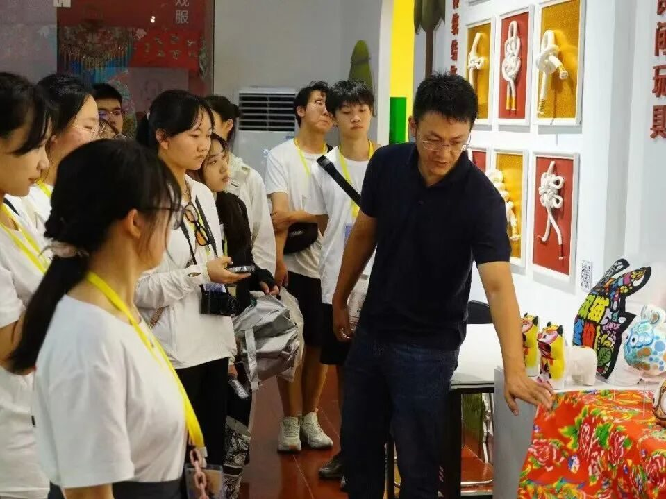
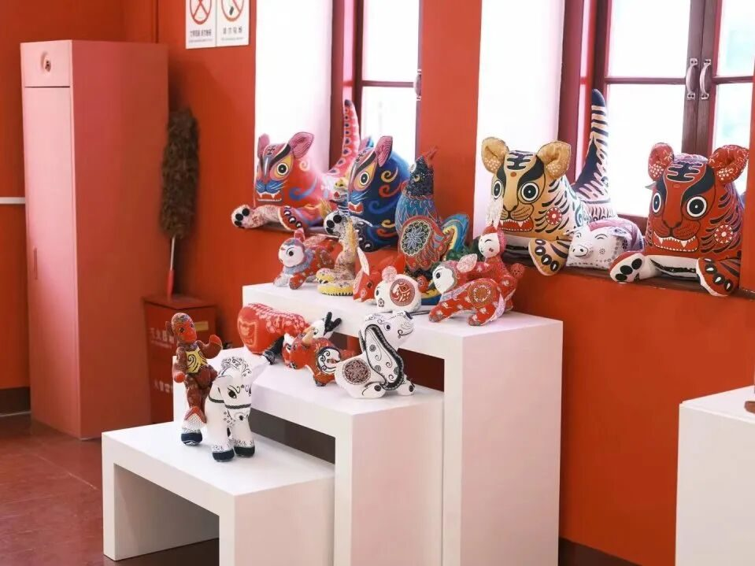
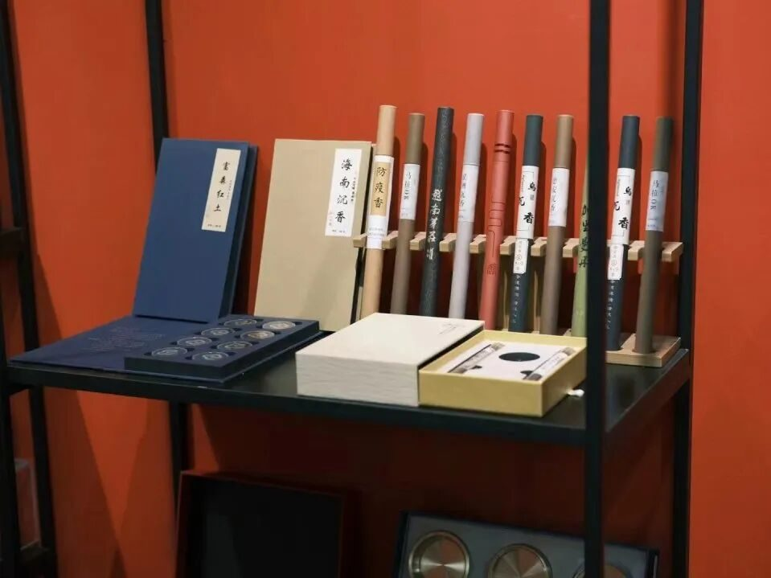
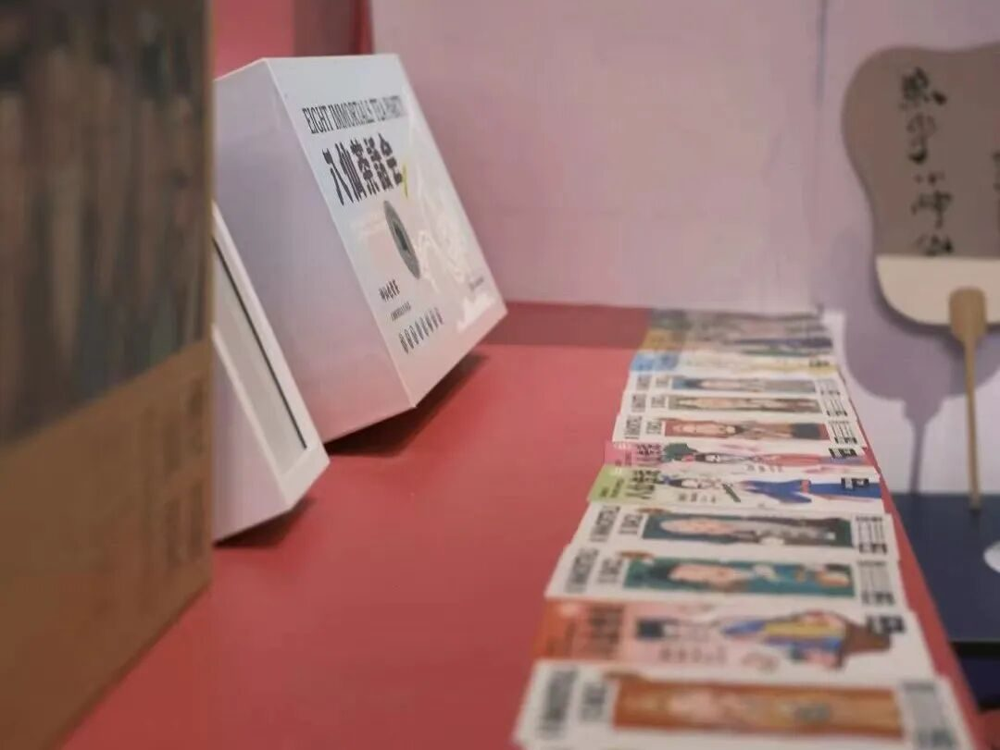
同时，我们也看到了体验馆别出心裁的做法：“数字化”以及创造“八仙”形象、开发文创产品。让传统文化顺应时代潮流，在核心不变的情况下实现了创造性的转化和创新性的发展。灵动的“八仙”形象，精美的剪纸图案，逼真的泥塑等等，都为我们留下了深刻的印象。
在全体成员的齐力配合下，我们顺利的完成了第一天的实践活动。通过采访参观，我们意识到：学习研究中华优秀传统文化是重点，而怎样去传承发扬则是重中之重。我们也更加期待通过此次调研，促进一部分群体去关注烟台剪纸，关注中华优秀传统文化，关注非物质文化遗产。

扫码关注
这个夏天
一起探索纸韵山东


来源 | 行者无疆实践团
图片 | 孙琦崴 郝钧宇 郭知钰
文字 | 郭知钰
排版 | 崔雨琪
审核 | 崔雨琪 杨婧葳